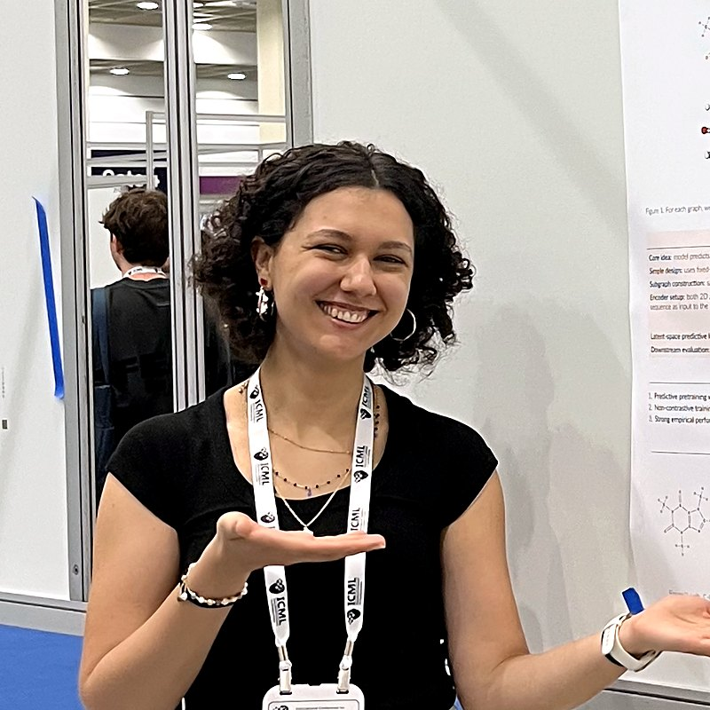

Boshra Ariguib
PhD student in the Trustworthy Artificial Intelligence Lab at the University of Cologne
I work on Trustworthy AI, in particular on making multi-agent AI systems more robust and reliable.
About
Hi! I'm Boshra, a PhD student in the Trustworthy Artificial Intelligence Lab at the University of Cologne. My research focuses on Trustworthy AI, with a particular interest in developing more reliable AI agent systems and improving the robustness of multi-agent systems.
From the shores of Tunisia to Stuttgart and now Cologne: I did my B.Sc. in Software Engineering and my M.Sc. in Computer Science (specialising in Intelligent Systems and Theoretical Computer Science) at the University of Stuttgart, with an exchange semester at IMT Atlantique in Brest. Along the way I've built deep learning models for molecular graphs, applied machine learning to biometric and IoT time-series data, and contributed to the Pluto.jl ecosystem.
Curious and friendly by nature, I love learning new things and bring both dedication and good vibes to any team.
News
-
Our paper Distillation of Foundation Models for Time-dependent PDEs was accepted at NeurIPS 2026!
-
Presented our paper Learning the Neighborhood at ICML 2026!
-
Started my PhD in the Trustworthy AI Lab at the University of Cologne.
-
Presented our molecular graph pretraining work at the NeurIPS 2025 workshop on New Perspectives in GNNs.
-
At JuliaCon Local Paris 2025 I gave a talk on computational storytelling and ran a workshop with Fons van der Plas on interactive stories with Pluto.
-
Graduated with an M.Sc. in Computer Science from the University of Stuttgart (1.2, with distinction).
-
Joined the Computational Cognitive Science Department at the University of Stuttgart as a research assistant, running an EEG and eye-tracking study.
-
Started an exchange semester on the Machine Learning track at IMT Atlantique in Brest, France.
-
Volunteering in Florianópolis, Brazil, teaching music to children with AIESEC.
-
Graduated with a B.Sc. in Software Engineering (1.6) from the University of Stuttgart.
-
Presented our paper on live context models for IoT at IEEE PerCom 2022.
Publications & talks
2026
- Distillation of Foundation Models for Time-dependent PDEs NeurIPS 2026 arXiv
- Learning the Neighborhood: Contrast-Free Multimodal Self-Supervised Molecular Graph Pretraining ICML 2026 arXiv ICML
2025
- Learning the Neighborhood: Contrast-Free Multimodal Self-Supervised Molecular Graph Pretraining NeurIPS 2025 Workshop on New Perspectives in Graph Neural Networks Workshop
- Computational Storytelling: Reimagining Scientific Communication with Pluto JuliaCon Local Paris 2025 Talk Video
- How to tell an interactive story with Pluto JuliaCon Local Paris 2025 Workshop Video
2022
- A live context model for semantic reasoning in IoT applications IEEE PerCom Workshops 2022, CoMoReA Paper